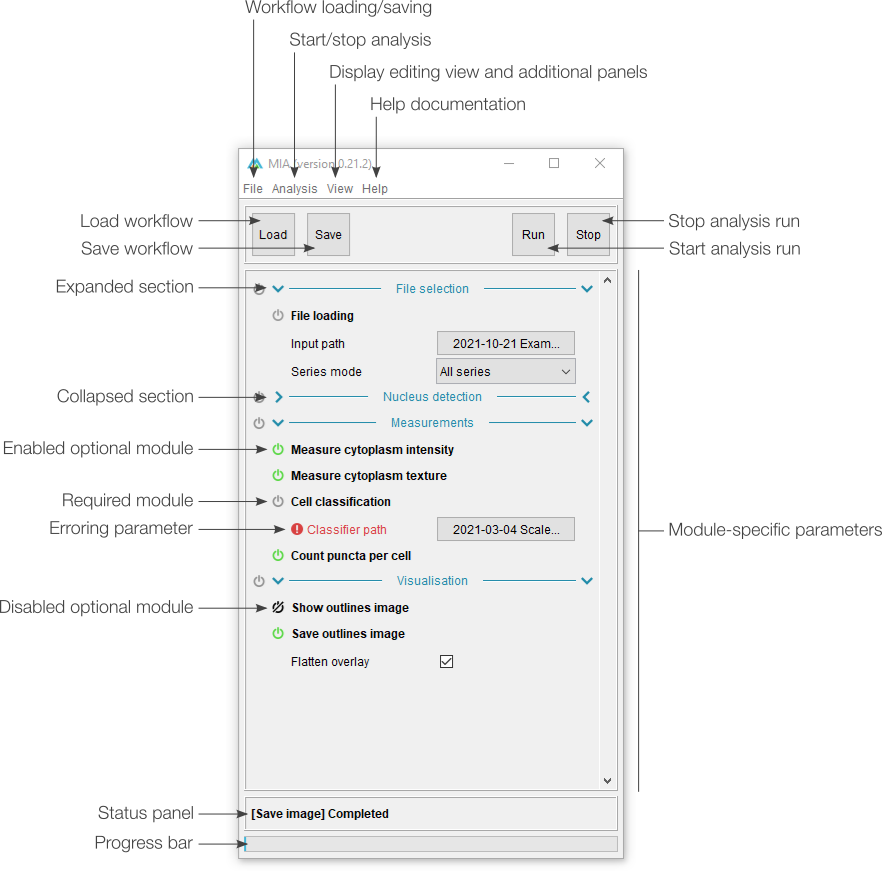

Introduction
MIA opens up in "processing view", which is the standard view to run workflows from. This view includes
controls to load workflow files and run analyses on new images. Full workflow editing can be performed in editing view.
Depending on how the workflow has been configured, a select subset of parameters may be visible to the user. It is intended that these are the only parameters that need be varied to get the workflow to run on new images.
Depending on how the workflow has been configured, a select subset of parameters may be visible to the user. It is intended that these are the only parameters that need be varied to get the workflow to run on new images.
Processing view
The basic processing view comprises a single main panel, showing all the available parameters. Certain
modules can be set by the workflow creator to be optionally enabled ( ) or disabled (
) or disabled ( ), while required modules have this icon greyed out
(
), while required modules have this icon greyed out
( ). Any parameters which are incorrect (e.g. paths to
files that don't exist) are highlighted in red with an accompanying error icon (
). Any parameters which are incorrect (e.g. paths to
files that don't exist) are highlighted in red with an accompanying error icon ( ). Modules can also be grouped into sections, which can be
independently expanded (
). Modules can also be grouped into sections, which can be
independently expanded ( ) or collapsed (
) or collapsed ( ) by clicking anywhere on the associated header.
) by clicking anywhere on the associated header.

{kind=link}
Click to see full size
Additional panels
Additional panels are available via the "View" menu. These are present in both "processing" and "editing"
views and can be closed using the cross button in the top-left corner of the panel.
The "About" panel displays the full documentation for a selected module, while the "Notes" panel offers a location to add module-specific notes. The corresponding module for both of these can be selected by clicking on the module heading. Notes could be added by the workflow creator to provide usage information for the end user, or they could be added by the end user as reminders. Notes are stored with a workflow when that workflow is saved.
The "File list" panel shows the current processing status of all queued analysis jobs. As such, it's primarily intended for batch processing files. By default, this view displays the job number, filename and progress; however, series name and series number can be added by right-clicking the top row.
The "About" panel displays the full documentation for a selected module, while the "Notes" panel offers a location to add module-specific notes. The corresponding module for both of these can be selected by clicking on the module heading. Notes could be added by the workflow creator to provide usage information for the end user, or they could be added by the end user as reminders. Notes are stored with a workflow when that workflow is saved.
The "File list" panel shows the current processing status of all queued analysis jobs. As such, it's primarily intended for batch processing files. By default, this view displays the job number, filename and progress; however, series name and series number can be added by right-clicking the top row.

Click to see full size
Navigation
Previous: Example workflows, Next: Using
existing workflows